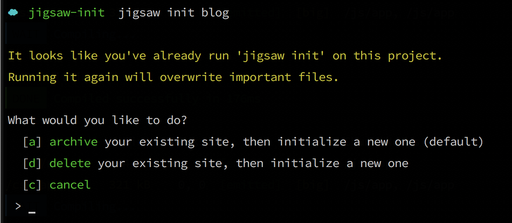

Using a Starter Template
To get you up and running with a fully-configured site quickly, Jigsaw includes two "starter templates"—one for a blog, one for open source documentation—that are ready for you to customize with your content. To use these templates as your starting point, simply add the name of the template to the init command:
./vendor/bin/jigsaw init blogor
./vendor/bin/jigsaw init docsBoth the blog and docs starter templates include samples of common page types, and come pre-configured with:
- A fully responsive navigation bar
- Tailwind CSS, a utility CSS framework that allows you to customize your design without touching a line of CSS
- Purgecss to remove unused selectors from your CSS, resulting in smaller CSS files
- Syntax highlighting using highlight.js
- A script that automatically generates a
sitemap.xmlfile - A custom 404 page
The blog template also includes:
- A component for accepting signups for a Mailchimp newsletter
- A sample contact form
- A search bar powered by Fuse.js and Vue.js, which indexes your content automatically and requires zero configuration
...while the docs template includes:
- A sidebar navigation menu
- A search bar powered by Algolia DocSearch, and instructions on how to get started with their free indexing service

View a preview of the blog template

View a preview of the docs template
Installing a Third-Party Starter Template
You can also install a starter template that was created by a third party. Third-party templates that are registed as Composer packages on Packagist can be installed by specifying the vendor and package name when running the init command:
./vendor/bin/jigsaw init tightenco/jigsaw-netlify-templateCreating your Own Starter Template
To create your own starter template to share with the Jigsaw community, simply set up your starter Jigsaw site in a public git repository, then register it as a Composer package on Packagist. Users will be able to install your starter template by specifying the vendor/package name in the init command.
When a user installs your template using the init command, Jigsaw will run the following steps by default:
- download the template files using Composer
- install the base Jigsaw files
- copy all the files from your template into the new Jigsaw project, overwriting any matching base files
- run
composer install,npm install, andnpm run dev
You can, however, customize the init process to gain full control over how a template is installed, by adding an init.php file to the root of the starter template. There are two ways to configure this init.php file:
1. Return an array of init settings
The init.php file can return an array, with the following keys (all optional):
delete: a file, or an array of files, that should be deleted from the base installignore: a file, or an array of files, that should be ignored from the starter template when installingcommands: a shell command, or an array of commands, that should be run after the template files have been copied to the project
For example:
init.php
<?php
return [
'delete' => [
'bootstrap.php',
],
'ignore' => [
'readme.md',
],
'commands' => [
'composer install',
'npm install',
'npm run watch',
],
];- Both
deleteandignoresupport*as a wildcard character. - The
vendor,node_modules, andbuild_*directories are never copied from a starter template, if they are present. - If a
commandskey is not specified in this array, the default commands will be run. If one or morecommandsare specified, only thecommandsyou specify (and not the defaults) will be run. Ifcommandsis an empty array, no shell commands whatsoever (including the defaults) will be run.
2. Call methods on the $init variable
For more fine-grained control, instead of returning a settings array in init.php, you can access the installer directly using the $init variable, and build your installation process using a fluent API. Available methods include:
setup(): Installs the base Jigsaw site filesdelete(): Delete one or more files from the project directoryignore(): Ignore one or more files when copying from the starter templatefrom(): Specify a package subdirectory to copy files fromcopy(): Copy one or more (or all, if no parameter is specified) files from the starter template to the projectrun(): Run one or more shell commandsconfirm(): Ask the user a yes or no questionask(): Ask the user an open-ended or multiple-choice questionoutput(),info(),error(),comment(): Write output to the console
delete(),ignore(), andcopy()support*as a wildcard character.
Using these commands, you can create more complex template installers. For example:
init.php
<?php
$init->setup()
->delete('webpack.mix.js')
->copy('base');
$theme = $init->ask(
'What theme would you like to use?',
['l' => 'light', 'd' => 'dark'],
$default = 'l'
);
switch ($theme) {
case 'd':
$init->from('themes/dark')->copy();
break;
default:
$init->from('themes/light')->copy();
break;
}
$init->output('Finishing installation...')
->run([
'composer install',
'npm install',
'./node_modules/.bin/tailwind init tailwind.js',
]);If you've created a starter template that you'd like to share, tell us on Twitter at @tightenco or open an issue in the Jigsaw docs repo. Very soon, we'll be adding a showcase of well-crafted templates created by the community, and we'd love to feature yours!
Handling Existing Site Data
When running jigsaw init, the command will check to see if you have already run init before, and have started creating your Jigsaw site. If so, you'll be prompted to either archive your existing site before initializing the new one (which will move all existing files to an archived directory), or delete your existing site and begin fresh:
